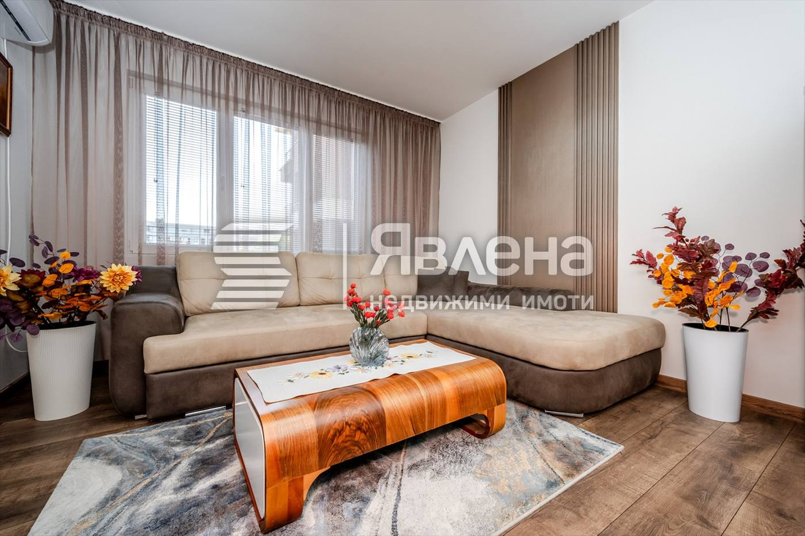
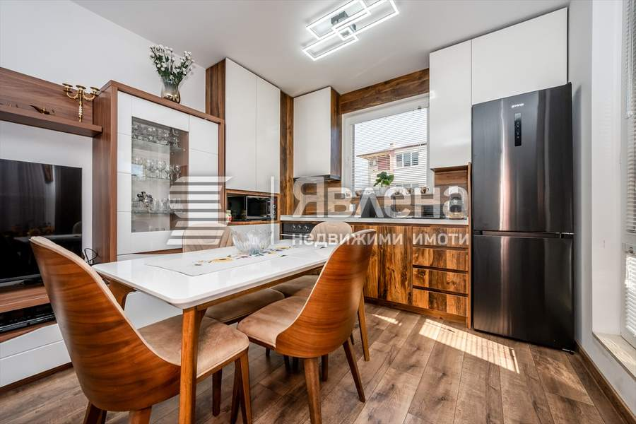
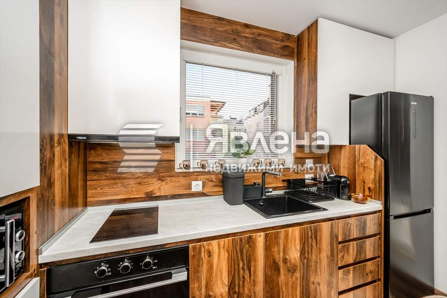
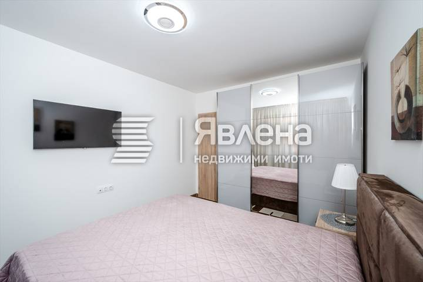

1. Манастирски ливади – Запад
70 м², 1 спальня, 2-й поверх, будинок 2023 року, нові меблі й техніка, газовий котел і кондиціонер
265 000 €3 786 €/м²
+3%до медіани району (3 669 €/м², 24 оголошення)
720–780 €прогноз оренди
1,9–2,6%чиста дохідність
Усталений престижний район, ставки оренди — серед найвищих у добірці. Ціна відповідає ринку: без переплати, але й без знижки.
Огляд на місці
- Престижний усталений район
- Невисока щільність забудови
- Може знадобитися частковий ремонт; обсяг і вартість варто оцінити до угоди
Наші дані
- Медіана ставок оренди в районі — 700 € на місяць; оголошень про оренду тут найбільше серед районів добірки (108 на imot.bg).
- 55% двокімнатних квартир у продажу в районі — у будинках, що будуються (по району загалом, не обов’язково поруч з об’єктом).
- Конкуренція при перепродажі висока: у районі 85 оголошень про продаж готових двокімнатних квартир у межах ±15% від ціни об’єкта.
- Найближча станція метро — на бульв. «Цар Борис III», 2,4 км пішки (~32 хв); до центру — 6,5 км (~10 хв автомобілем без заторів).